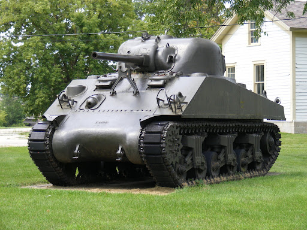

SAD u Drugom svjetskom ratu
Iako su Sjedinjene Američke Države tijekom Drugog svjetskog rata masovno proizvodile samo tenk imena M4 Sherman one su u manjoj količini koristile još 6 drugih modela. Rasprava o podjeli tenkova toga doba na lagane i teške je bespredmetna pošto su sve države ušle u rat s "igračkama" od 5 tona da bi vremenom težina tih tenkova neprekidno rasla. Općenito tijekom ovoga rata američki tenkovi su bili slabiji od svojih njemačkih protivnika, ali se mora imati na umu kako se američka vojna doktrina tada (i danas) svodila na stvaranje nadmoćnog zrakoplovstva koje uništava protivničku vojnu opremu.
U Boga mi vjerujemo...
Sherman M4 - osnova ovoga tenka je dizajn njegovog prethodnika M3 Lee koji je bio procijenjen nezadovoljavajućim početkom drugog svjetskog rata. Jedina konkretna razlika između ova dva tenka je bila upotreba dva topa u M3 što je procijenjeno kao nepraktično rješenje koje je zamijenjeno klasičnom kupolom kakvu su imali svi tada moderni tenkovi. To na kraju nije otklonilo sve greške dizajna koje se mogu najbolje uočiti ako se usporediti slika Panzer III ili Panzer IV tenka sa Shermanom. On je jednostavno bio previsok tenk što je za posljedicu imalo rano otkrivanje njegove pozicije u sukobu s protivnikom.
